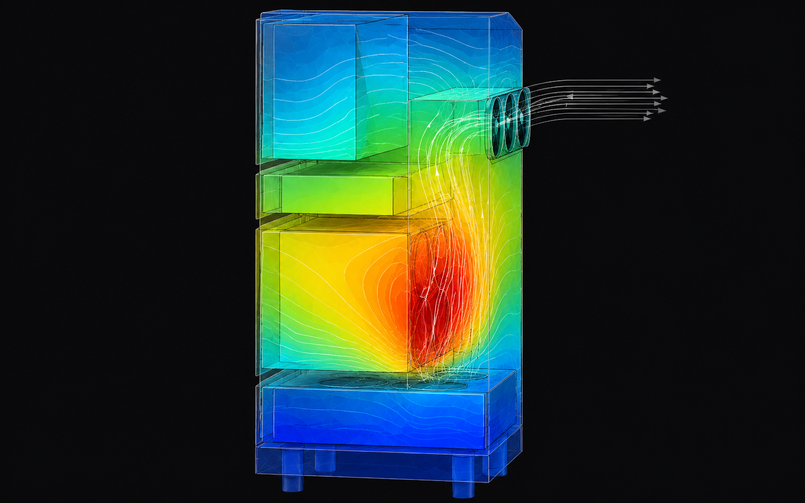
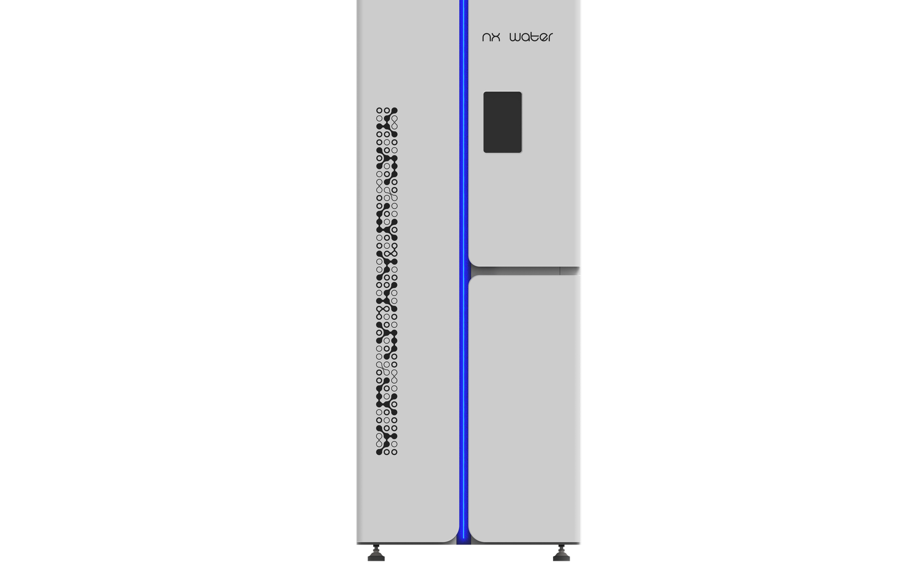
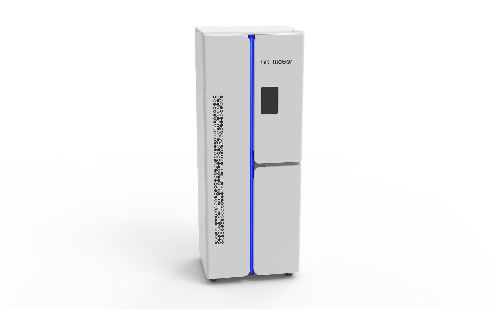

A five-year engagement with Beijing KSM Technologies that began on a placement year and ended with a Chinese design patent. Visual identity, an R&D collaboration that solved a thermal failure, and lead product design for the NX Water consumer sub-brand.
Beijing KSM Technologies is a manufacturer specialising in water-treatment and environmental systems. The engagement started in 2020 as a placement-year VI refresh, expanded into R&D collaboration on enclosure thermal performance, and matured into lead product design for the launch of a new consumer sub-brand — NX Water — with a Chinese design patent granted on the filter housing in December 2025.
Three distinct phases over five years, each one earning the trust that opened the next. What started as identity work ended as legally-protected product IP — a trajectory that most design consultancy briefs don’t allow.
Phase 1 — visual identity, end-to-end.
01 / CI/VIThe placement-year (2020) brief was a full brand audit and refresh of KSM’s identity system. Starting with print, digital, and environmental touchpoints, I rebuilt the visual language from the mark outward — refined logotype, typography stack, colour spec, and a documented asset library that the company adopted across every department.
Crucially the work shipped: every business card, internal document template, factory signage spec, and digital application now in use across the company runs on this identity system. It wasn’t a deck — it was a working brand the company picked up and ran with, and which became the foundation for the sub-brand launched five years later.
Phase 2 — R&D collaboration on a real failure.
02 / R&DThe way in to R&D wasn’t a meeting room — it was the factory floor. I spent time disassembling production units and watching the assembly line, building first-hand understanding of the internal structure before proposing anything. That hands-on grounding is what made the next part possible.
The core engagement of this phase resolved an electrode overheating problem on a key product line. The original enclosure trapped heat against the electrode stack under sustained load; the fix combined enclosure venting redesign, an adjusted internal mounting layout for the control components (rebalancing centre-of-gravity so the unit sat correctly during operation), and revised CMF specs for the affected surfaces. The redesigned enclosure went into production and the failure mode stopped recurring.
The R&D phase also seeded the design language and the manufacturing literacy that the sub-brand product range would inherit two years later.

Phase 3 — NX Water sub-brand.
03 / NX WATERLed the full product-design and brand-build for NX Water — KSM’s new consumer water-treatment line. Scope covered the whole identity (logotype, brand pattern, colour system, asset library) and the whole exterior of the product range: filter housing, control panel, overall form, finish spec across SKUs.
The filter housing was granted a Chinese design patent in December 2025 — the first patent-protected design to come out of the engagement. The work continues from here.


Most design consultancy briefs are 6–12 weeks: scope, ship, leave. The thing that’s unusual about this engagement isn’t any single deliverable — it’s the arc. Staying with one client across five years let me see the consequences of decisions made at one phase land in the next: an identity system mature enough to spawn a sub-brand, manufacturing fluency built on the factory floor that paid off when a product needed a thermal redesign, and a relationship trusted enough that a placement-year designer eventually led the product line that earned the company’s first design patent.
The takeaway I carry into every new engagement: identity, engineering, and IP outcomes don’t live in separate departments — they live in a continuous relationship, and they compound.